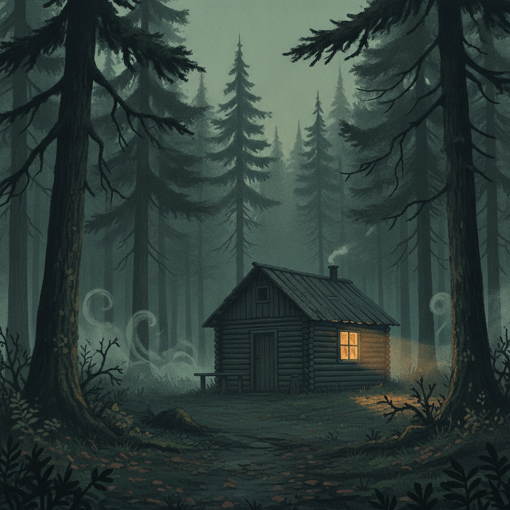
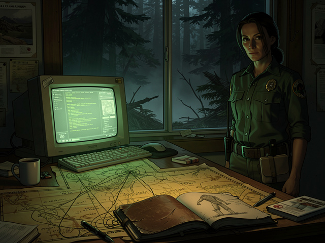

The wait was a kind of penance. The hemlock loomed over Nora like a monolith, the body a grim pendant on its ancient limbs. She forced herself to breathe slowly, capturing each shadow in her notebook until the arrival of the search and rescue team broke the forest's stillness.
The team leader, Danny Moore, strode up with climbing ropes slung across his chest, sunglasses hiding his eyes. "What a mess," he exhaled, scanning the scene. His voice carried the authoritative calm born of too many disasters.
"Climbing won't be easy here," Nora said, gesturing to the slick hemlock. "But it's the only way." She let her sentence hang, knowing he'd catch the implication.
Danny squinted up at the body, then shouted commands to his team to set up anchors and pulleys. As they worked, Nora moved closer to him.
"It doesn't look like a bear attack," she said. She tried to keep her voice even, factual.
"What makes you say that?"
"The claw marks on the bark. Too precise. And there's something else. I found a track, but it's like nothing I've ever seen."
Danny removed his sunglasses, eyes serious. "You think it's something other than a bear?"
"There's more going on here," she replied. "I need to check the old incident logs, see if anything similar's happened in the area. Match the pattern—if there is one."
Danny nodded slowly. "Alright. Keep me posted."
The team retrieved the body, maneuvering ropes and bodies in a practiced ballet of grim precision. Nora turned her back during the descent, forcing herself to focus on the forest around her.
The musky scent lingered, whispering warnings with every breeze. Nora's muscles twitched, body poised for fight or flight. Much as the bears she'd studied, living on an edge of instinct and survival.
Danny approached, a new tightness in his posture. "We're clear here. Help's on the way for the rest."
"I need to follow up on that footprint," Nora said. "And I'll cross-reference the reports tonight. See if there's a precedent for something like this."
"Stay sharp, Nora."
"Always," she replied, already moving toward the trees.

The sun had dipped lower by the time she made it back to the ranger station. Its waning light cast long shadows across the woods, filling each crevice with imagined dangers. She slipped inside her office, the warmth a sharp contrast to the forest's chill.

Nora sank into her chair and booted up the dusty desktop, fingers flying over the keys as she sifted through archived park reports. She knew she was looking for anomalies—anything that broke the bear-attack script the official log would default to. Her eyes scanned page after page, landing on a series of reports from the 1970s, their typeface faded but legible.
"Samsquatch" was the word that caught her eye, a relic name infused with folklore and incredulity. She almost scrolled past, but a handwritten note in the margin stopped her: *See Old Field Diary, Box 7.* A ranger's private log, not intended for digitization.
Nora pulled the box from a shelf, dust sifting into the air. Inside, a worn leather notebook held entries in cramped, shaky script. She opened it to a page dated July 1974. The ranger had drawn a sketch—a massive bipedal form half-hidden in the trees, its proportions wrong, limbs too long. Beneath it, he'd written: *It watched me for three hours. Made no sound. Left no scent. I fired a warning shot. It did not flinch. I cannot convince myself it was a bear.*
Further entries described missing livestock, strange prints, trees stripped to the bone. But one entry stood out: a description of a sound—a low, resonant hum that seemed to come from the ground itself, vibrating up through the ranger's boots. *It is not an animal,* he wrote. *It is something that knows it is being watched.*
Nora's chest tightened. She was not looking for a creature that left tracks. She was looking for something that had been leaving *her* a trail.
She drew lines, connecting dots across maps crumpled and yellowed with time. The attacks clustered along a migration corridor—but not one used by bears. The pattern was deliberate, following something specific. Something that bled into the known world only in fragments.
Too late, evening had morphed into night. Her eyes ached with fatigue, but her mind buzzed, connections forming in the patterns before her. She pushed back from the desk and rubbed her temples, readying herself for the days to come.
Lives were at stake, and the unseen dangers of the North Cascades swirled in the dark, waiting to be uncovered.